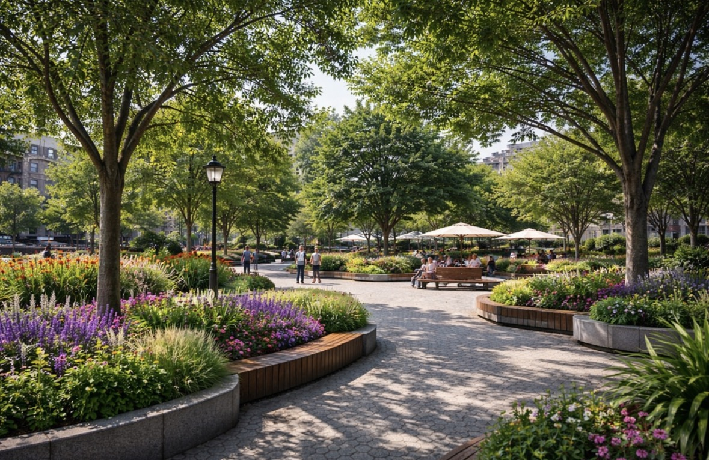
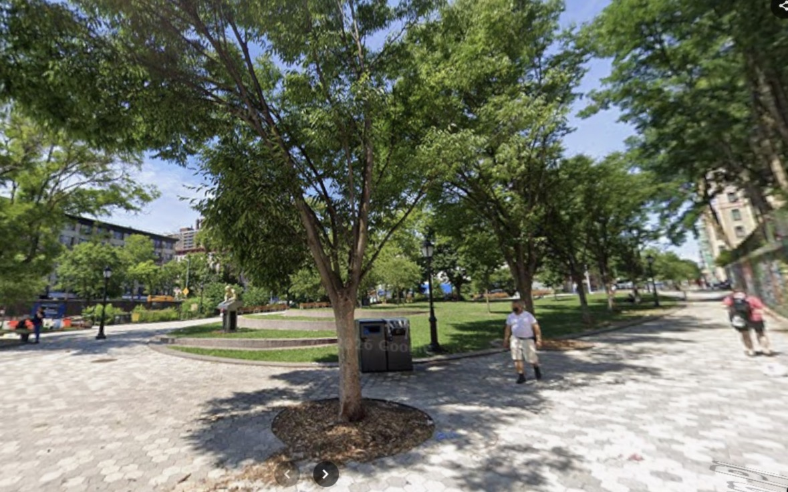

Final Design Proposal
for Montefiore Square
My final proposal reimagines Montefiore Square as a more comfortable, flexible, and community-centered public space. Instead of functioning mainly as a pass-through area, the redesigned plaza would better support people who want to sit, gather, rest, and spend time there. The proposal focuses on solving the site’s biggest problems by improving shade, adding more flexible seating, strengthening planting design, and creating a clearer connection to the identity of Hamilton Heights. The goal is not only to make the plaza look better, but to make it work better for commuters, students, families, and local residents who use it every day.

Shade and Planting
Layered planting beds, flowering species, and additional landscape elements make the plaza cooler, softer, and more welcoming while helping address the current lack of shade.
Safer, More Active Space
Improved lighting and stronger edge design make the plaza feel more visible, comfortable, and usable throughout the day and into the evening.
Flexible Gathering Space
Movable seating and clearer social zones allow the plaza to support resting, eating, studying, conversation, and small community gatherings in a more adaptable way.
Stronger Neighborhood Identity
The redesign aims to make the plaza feel more connected to Hamilton Heights through public art, material choices, and a more memorable visual character.

Before
The existing plaza has a strong foundation, but it still lacks meaningful shade, varied seating, and a clear sense of identity that encourages people to stay longer.
After
The redesign creates a plaza that is greener, more comfortable, and more socially flexible while also making the space feel more rooted in the surrounding community.